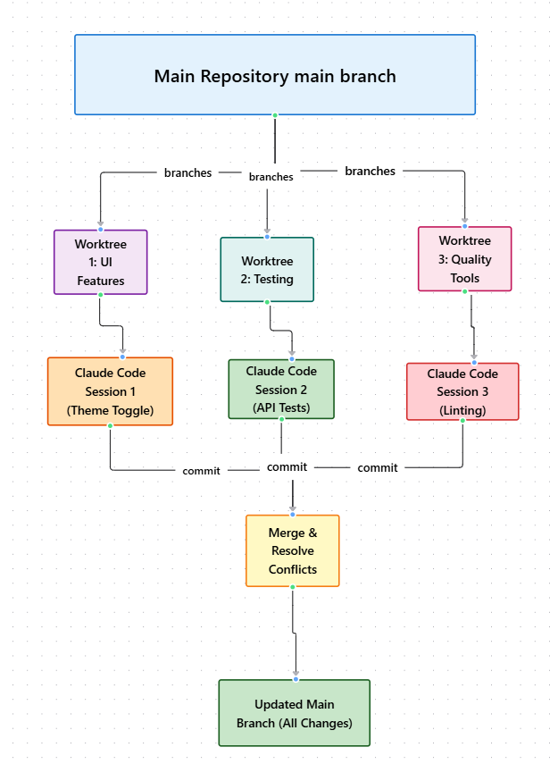
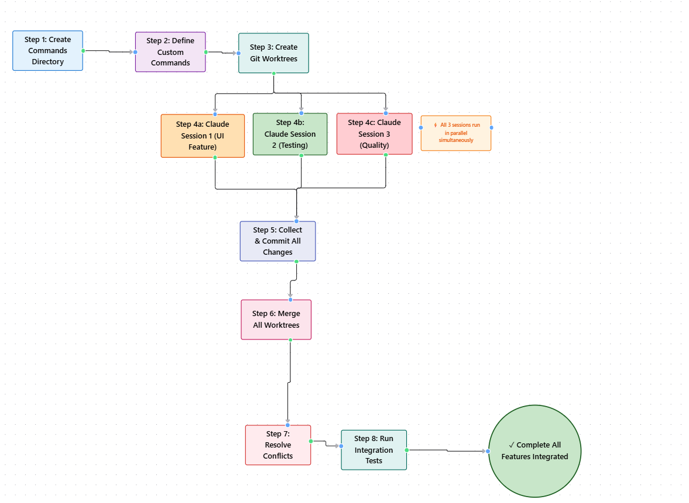

Module 1 — Episode 6
Training:Claude Code - A Highly Agentic Coding Assistant
Course Level: Intermediate → Advanced
🎯 What You'll Learn
By the end of this episode, you will:
- ✅ Use Git worktrees to manage multiple Claude Code sessions safely in parallel
- ✅ Create and use custom Claude Code commands for feature isolation
- ✅ Coordinate multi-feature development across front-end, back-end, and DevOps simultaneously
- ✅ Merge, resolve conflicts, and validate integrated changes efficiently
🧭 Quick Overview
The Big Picture:This episode demonstrates how to scale Claude Code beyond single-feature workflows by using Git worktrees and custom commands. You’ll learn how to work on multiple features concurrently—without overwriting files or creating merge chaos.
What Problem Does This Solve?- Avoids file conflicts when running multiple Claude Code sessions
- Enables true parallel feature development
- Simplifies merging and testing across branches
- Multi-feature sprints
- Large-scale refactorings
- Coordinated front-end/back-end updates
🧱 Prerequisites & Background
You should already know:- Basic Git branching and commits
- How to open and run Claude Code sessions
- How to use
/permissionsand.claudeconfiguration
→ Start with [Episode 3: Managing Code Context and State with CLAUDE.md]
🔑 Core Concepts Explained
Concept 1: Git Worktrees
Definition:Independent working directories tied to specific branches of the same repository.
Why It Matters:Prevents file overwrites when running multiple Claude Code instances simultaneously.
When To Use:When developing or testing multiple features in parallel.
Concept 2: Custom Commands
Definition:Markdown-based command definitions stored in .claude/commands that let you define reusable workflows.
Encapsulates repetitive prompts (e.g., “implement feature”, “add and commit”) into consistent, shareable commands.
When To Use:For repeatable tasks or enforcing team-specific conventions.
Concept 3: Parallel Claude Sessions
Definition:Running multiple Claude Code terminals, each targeting a separate Git worktree.
Why It Matters:Allows simultaneous development across different code areas—front-end, testing, quality tools—without interference.
When To Use:When multiple engineers (or multiple Claude instances) need to work on different features concurrently.
🖼 Architecture & Flow Diagrams
System Diagram
 What This Shows:Each Claude Code session works in isolation on its own worktree, commits changes independently, and merges back into the main branch safely.
Workflow Sequence
 Key Takeaway:Parallel Claude Code sessions + Git worktrees = safe, scalable multi-feature development.
⚙️ Technical Deep Dive
How It Works: Step-by-Step
#### Phase 1: Create Custom Commands (Optional but Recommended)
Custom commands let you reuse complex prompts with simple keywords.
Create the directory:mkdir -p .claude/commands
implement-feature.md:
# Implement Feature
You will be implementing a new feature in this codebase
$ARGUMENTS
IMPORTANT:
- Only implement the feature for front-end if this is UI-related
- Once built, write changes to file called frontend-changes.md
- Do not ask for permissions to modify files, assume you have full access
claude
# Now you can use: /implement-feature "Add dark mode"
#### Phase 2: Initialize and Create Git Worktrees
Git worktrees allow multiple Claude Code sessions working on different features simultaneously.
Prepare your repository:# Commit any outstanding changes
git add -A
git commit -m "Before starting parallel development"
# Create worktree directory
mkdir .trees
# Worktree 1 - Frontend feature
git worktree add .trees/ui_feature
# Worktree 2 - Testing improvements
git worktree add .trees/testing_feature
# Worktree 3 - Code quality tools
git worktree add .trees/quality_feature
git worktree list
# Output:
# /path/to/repo [main]
# /path/to/repo/.trees/ui_feature [ui_feature]
# /path/to/repo/.trees/testing_feature [testing_feature]
# /path/to/repo/.trees/quality_feature [quality_feature]
#### Phase 3: Launch Parallel Claude Code Sessions
Open separate integrated terminals for each worktree:
Terminal 1 - UI Feature:cd .trees/ui_feature
claude
# Prompt (see examples below)
cd .trees/testing_feature
claude
# Prompt (see examples below)
cd .trees/quality_feature
claude
# Prompt (see examples below)
Each session operates independently—no file conflicts!
#### Phase 4: Commit Changes in Each Worktree
After Claude finishes each feature:
# In each terminal, commit the changes
git add -A
git commit -m "feat: [feature description]"
# Exit Claude Code
exit
#### Phase 4: Merge & Resolve Conflicts
Back in main branch:
# Return to main directory (leave worktrees)
cd ..
git checkout main
# Build a prompt for Claude to merge
claude "Use the git merge command to merge in all the worktrees of the .trees folder into main and fix any conflicts if there are any"
git merge .trees/ui_feature
git merge .trees/testing_feature
git merge .trees/quality_feature
git worktree remove .trees/ui_feature
git worktree remove .trees/testing_feature
git worktree remove .trees/quality_feature
rm -rf .trees
Why This Design Works
Underlying Principles:- Isolation: Each worktree is a sandboxed environment.
- Parallelism: Multiple Claude sessions can run without interference.
- Automation: Claude Code can manage commits and merges intelligently.
- No overwriting between sessions
- Each feature has its own commit history
- Merge conflicts handled programmatically
✅ When To Use This Feature
Ideal Use Cases
✅ Perfect For:- Multi-feature sprint development
- Cross-functional teams (front-end, QA, DevOps)
- Continuous integration testing
- Zero downtime between features
- Reduced merge errors
- Faster iteration cycles
Anti-Patterns: When NOT To Use
❌ Avoid When:- Working on a single small feature
- You don’t need concurrent sessions
- You’re not comfortable resolving Git merges
- Forgetting to commit before merging
- Editing shared files in multiple worktrees
- Failing to test after merge
🔧 Practical Implementation Guide
Step 1: Create a Custom Command
mkdir -p .claude/commands
nano .claude/commands/implement-feature.md
# Implement Feature
Implement a new front-end feature: $ARGUMENTS
Write all changes to frontend-changes.md
Step 2: Add Worktrees
mkdir trees
git worktree add trees/ui_feature main
git worktree add trees/testing_feature main
git worktree add trees/quality_feature main
Step 3: Run Claude Code in Each Worktree
cd trees/ui_feature && claude /implement-feature "Add light/dark theme toggle"
cd trees/testing_feature && claude /implement-feature "Enhance FastAPI endpoint tests"
cd trees/quality_feature && claude /implement-feature "Add code quality and formatting tools"
Step 4: Merge All Worktrees
cd main
claude "Merge all worktrees and resolve any conflicts automatically"
💡 Practical Tips & Tricks
Pro Tip 1: Automate Commits
Technique:Create a /commit-with-description custom command for consistent commit messages.
Pro Tip 2: Manage Permissions
Technique:Use .claude/settings.local.json to whitelist trusted commands.
Pro Tip 3: Use Claude for Merge Conflict Resolution
Technique:Prompt Claude:
"Analyze merge conflicts in pyproject.toml and complete the merge safely"
🚀 Real-World Examples with Actual Prompts
Example 1: Dark/Light Theme Toggle Feature
Worktree 1 Setup:mkdir .trees && git worktree add .trees/ui_feature
cd .trees/ui_feature
claude
Add a toggle button that allows users to switch between dark and light themes.
1. Toggle Button Design
- Create a toggle button that fits the existing design aesthetic
- Position it in the top-right
- Use an icon-based design (sun/moon icons or similar)
- Smooth transition animation when toggling
- Button should be accessible and keyboard-navigable
2. Light Theme CSS Variables
Add a light theme variant with appropriate colors:
- Light background colors
- Dark text for good contrast
- Adjusted primary and secondary colors
- Proper border and surface colors
- Maintain good accessibility standards
3. JavaScript Functionality
- Toggle between themes on button click
- Smooth transitions between themes
- Remember user's preference in localStorage
4. Implementation Details
- Use CSS custom properties (CSS variables) for theme switching
- Add a `data-theme` attribute to the body or html element
- Ensure all existing elements work well in both themes
- Maintain the current visual hierarchy and design language
✓ New toggle button component created
✓ CSS variables defined for both themes
✓ JavaScript event listeners configured
✓ localStorage persistence implemented
✓ All existing UI elements tested in both themes
git add -A
git commit -m "feat: add dark/light theme toggle"
exit # Exit Claude Code
Example 2: Enhanced Testing Framework
Worktree 2 Setup:git worktree add .trees/testing_feature
cd .trees/testing_feature
claude
Enhance the existing testing framework for the RAG system in @backend/tests.
The current tests cover unit components but are missing essential API testing infrastructure:
- API endpoint tests - Test the FastAPI endpoints (/api/query, /api/courses, /) for proper request/response handling
- pytest configuration - Add pytest.ini options in pyproject.toml for cleaner test execution
- Test fixtures - Create conftest.py with shared fixtures for mocking and test data setup
The FastAPI app in backend/app.py mounts static files that don't exist in the test environment.
Either create a separate test app or define the API endpoints inline in the test file to avoid import issues.
Follow these patterns:
- Create a fixture for mocking the FastAPI app
- Create fixtures for sample test data (courses, chunks)
- Test both success and failure scenarios
- Test error handling with invalid inputs
✓ conftest.py created with shared fixtures
✓ pytest.ini configured in pyproject.toml
✓ API endpoint tests written for /api/query
✓ API endpoint tests written for /api/courses
✓ Session management tests added
✓ All tests pass
git add -A
git commit -m "test: enhance testing framework with API tests and fixtures"
exit
Example 3: Code Quality Tools Setup
Worktree 3 Setup:git worktree add .trees/quality_feature
cd .trees/quality_feature
claude
Add essential code quality tools to the development workflow.
Requirements:
1. Setup black for automatic code formatting
- Add black configuration to pyproject.toml with line-length=100
- Format the entire codebase
2. Add proper formatting consistency throughout the codebase
- Format all Python files
- Update imports if needed
- Ensure all edge cases are handled
3. Create development scripts/tasks for running quality checks
- Script to run: black (formatting)
- Script to run: pytest (tests)
- Create a Makefile or script with simple targets
4. Create targets like:
- make format-check # Verify formatting without changes
- make format-fix # Auto-format code
- make test # Run tests
- make quality # Run all quality checks
✓ Black configured in pyproject.toml
✓ All Python files formatted with black
✓ Makefile created with quality check targets
✓ Development workflow documentation added
✓ CI/CD ready for automated quality checks
git add -A
git commit -m "chore: add code quality tools (black, Makefile)"
exit
Final Step: Merge All Worktrees
Back in main directory:cd .. # Go back to root
git checkout main
claude
Use the git merge command to merge in all the worktrees of the .trees folder
(ui_feature, testing_feature, quality_feature) into main and fix any conflicts if there are any.
git worktree remove .trees/ui_feature
git worktree remove .trees/testing_feature
git worktree remove .trees/quality_feature
rm -rf .trees
Example: Parallel Frontend, Testing, and Quality Enhancements
Context:Adding a theme toggle, expanding tests, and enforcing formatting standards simultaneously.
Claude Code Approach:# UI Feature
claude "Add theme toggle switch... (see Example 1)"
# Testing Feature
claude "Enhance testing framework... (see Example 2)"
# Quality Feature
claude "Add code quality tools... (see Example 3)"
All features completed concurrently, merged cleanly, and verified via automated tests.
🤔 Common Questions & Troubleshooting
Q: What if two worktrees modify the same file?
A: Claude will detect merge conflicts during merge and can automatically resolve them when prompted.Q: Can I delete worktrees after merging?
A: Yes. Rungit worktree remove trees/ once merged.
Q: Why does Claude ask for permissions again?
A: Check.claude/settings.local.json — add your commands under "permissions" to persist approvals.
📊 Performance & Optimization
Context Window Management
- Each Claude session is isolated, minimizing context bloat.
- Keep
.claude/commandslightweight to reduce token usage.
Speed Optimization
- Run sessions in parallel to reduce total development time.
- Use concise prompts for faster Claude responses.
Cost Considerations
- Parallel sessions increase token usage; merge frequently to minimize drift.
🔗 Related Topics & Next Steps
You Should Also Learn About:- [Episode 7: GitHub Integration for Pull Requests]
- [Episode 5: Customizing CLAUDE.md for Team Workflows]
📌 Key Takeaways
1. Git Worktrees enable safe parallel development — isolate features without conflicts.
2. Custom Commands streamline repetitive prompts — improve consistency and productivity.
3. Claude Code can automate merges and conflict resolution — reducing manual Git overhead.
4. Parallel Claude sessions scale your productivity — multi-feature development without chaos.
🎓 Quick Reference
Command Cheat Sheet
| Purpose | Command | When to Use |
|---|---|---|
| Create worktree | git worktree add trees/ |
Set up parallel feature branches |
| Run Claude in worktree | claude /implement-feature " |
Start feature-specific session |
| Merge all worktrees | claude "Merge all worktrees and resolve conflicts" |
Integrate changes |
| Remove worktree | git worktree remove trees/ |
Clean up after merge |
Keyboard Shortcuts
Shift+Tab– View Claude’s plan before executionCtrl+C– Cancel current operationEsc– Exit prompt input
Common Prompts
/implement-feature "Add new API route"
/commit-with-description "Add endpoint tests"
/permissions "Grant access to Git commands"
🔐 Security & Best Practices
Privacy Considerations:- Keep sensitive environment variables out of Claude context.
- Do not store secrets in
.claude/commands.
- Run tests after merging worktrees.
- Validate each feature branch independently before integration.
- Share reusable commands via
.claude/commands/in version control. - Use consistent commit message styles across worktrees.
📚 Extra Resources
Official Documentation: Additional Learning:- Blog: Parallel Feature Development with Claude Code
- Video: Managing Multi-Session AI Development Environments
⭐ Conclusion
What You've Mastered:Parallel feature development using Claude Code, Git worktrees, and custom commands.
How This Fits Into Real Development:You can now safely scale your Claude Code workflows across multiple features, teams, and environments.
Your Next Challenge:Integrate Claude Code with GitHub to automate pull request reviews and code suggestions.
Pro Tip for Long-Term Mastery:Standardize your .claude/commands directory across projects to enforce consistent AI-assisted development patterns.